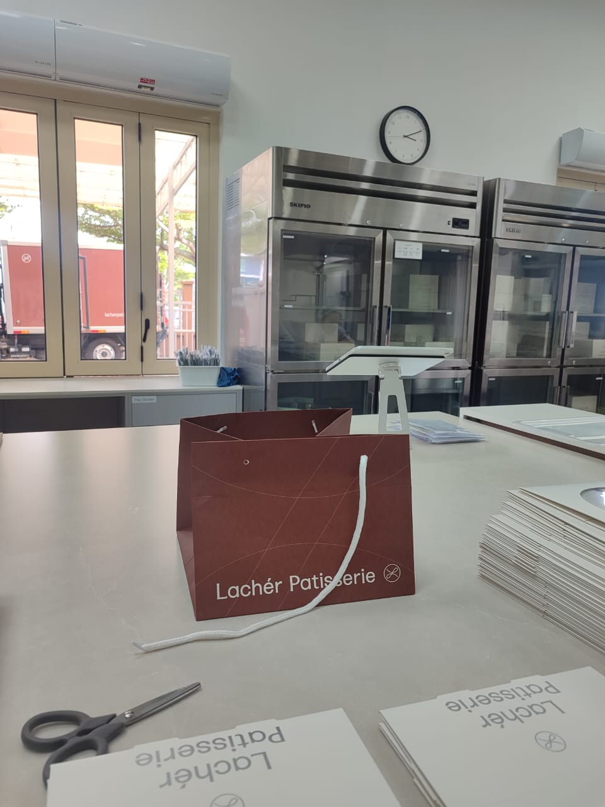

Part-Time Experience
During my academic semester break, I worked at Lachér Patisserie located in Petaling Jaya, Selangor, serving as an operational staff and packer. This fast-paced environment provided me with deep practical exposure into corporate operations and service standards.
- Developed core professional skills in customer service and stakeholder management.
- Enhanced teamwork, operational coordination, and cross-department collaboration.
- Mastered strict time management frameworks to guarantee on-time daily packing deliveries.
- Maintained high quality-assurance standards to prevent shipping identification errors.
- Pack pastries and bakery products according to company standards.
- Label and arrange products for delivery or display.

Internship Experience
I successfully completed a rigorous two-month corporate internship attachment at Thomson Hospital Kota Damansara in Petaling Jaya, Selangor. This role allowed me to bridge academic frameworks with critical medical records industry workflows.
- Retrieve and file patient medical records accurately.
- Sort and organize medical folders according to MRN.
- Track the movement of patient records within the hospital.
- Assist in preparing records for clinics, wards, and departments.
- Support daily operations of the Medical Records Department.
- Handle record requests from authorized healthcare personnel.

Location
-Find Petaling Area-